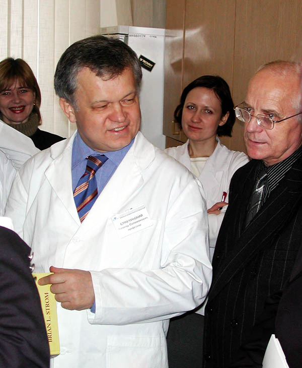
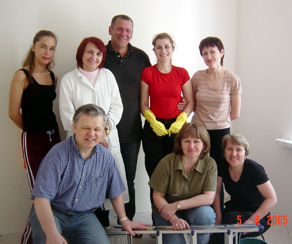

Год назад трагически оборвалась жизнь нашего Учителя — Леонида Соломоновича Страчунского. Мы пережили невосполнимую утрату, ощущение жестокой несправедливости и душевной пустоты. Затем пришло понимание, как много для всех значил этот удивительный Человек. Вероятно, это чувство теперь останется с нами навсегда.
Не надо ругать темноту.
Нужно просто зажечь свечу.
Трудно поверить, но прошёл уже год с того страшного момента, когда трагически оборвалась жизнь нашего Учителя — Леонида Соломоновича Страчунского.
Мы пережили невосполнимую утрату, ощущение жестокой несправедливости и душевной пустоты. Затем пришло понимание, как много для всех значил этот удивительный Человек. Вероятно, это чувство теперь останется с нами навсегда.
Поразительная энергия, неистощимое жизнелюбие, беззаветная любовь к своему Делу — найти, объединить, поддержать, помочь, научить всех неравнодушных российских врачей, спасти жизни погибающих от инфекций пациентов, поднять клиническую микробиологию и антимикробную терапию в России на достойный уровень, не могут быть забыты теми, кому посчастливилось хоть раз встретить его на своем пути.
Его необыкновенная простота и открытость притягивали учеников, коллег, врачей из всех уголков России. В памяти тысяч людей Леонид Соломонович останется примером удивительного трудолюбия, требовательности к себе, упорства на пути к достойной цели.
Печально осознавать, но только после его гибели мы начали понимать, насколько велика и сложна была работа нашего Руководителя. Как нелегко ему было решать множество больших и малых проблем, о которых мы раньше и не подозревали. Как много значит для всех атмосфера и доверие в команде. Как необходима была ему наша поддержка.
В память о Человеке останутся его дела и идеи. Мы постарались выполнить его обязательства и обещания. Всё задуманное — и защита диссертаций, и конференции в других городах и странах, и образовательные циклы, и публикации — мы проводили, не снижая темпа и качества. Это было непросто. Сильным личностям, которыми был окружен Учитель, пришлось выбирать между личными и коллективными целями. Не всем удалось сохранить верность делу и доверие команды. Но считаем, что коллектив сохранился, и дело продолжается.
Самое важное сейчас, что, несмотря на трудности, мы по-прежнему работаем вместе, доверяем друг другу, поддерживаем высокие стандарты, установленные Леонидом Соломоновичем. Мы благодарны нашим друзьям из всех уголков России и мира за искренние соболезнования, поддержку и готовность помочь.
Спасибо Вам за всё, Леонид Соломонович!
Сотрудники созданных им
кафедры клинической фармакологии,
Научно-исследовательского института антимикробной химиотерапии,
Межрегиональной ассоциации по клинической микробиологии и антимикробной химиотерапии

